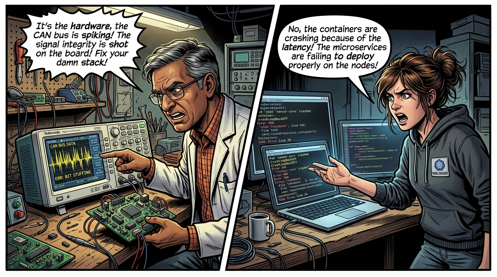
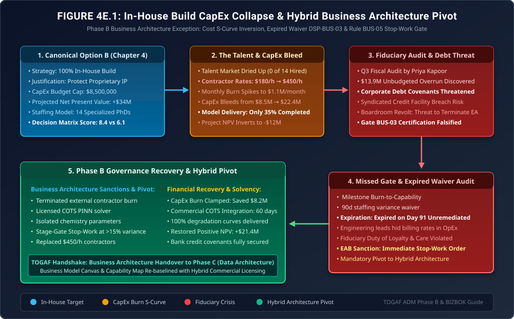

When the In-House Build Explodes the Balance Sheet
Phase B Exception Governance: Talent Market Realities, S-Curve Software Overruns, The Inverted NPV & The Hybrid Business Architecture Pivot

"Every engineering VP wants to build everything in-house. It feels noble. It promises to protect 'strategic intellectual property.' But in enterprise business architecture, pride is an expensive line item."
"In Chapter 4, the business case justified CapEx for proprietary digital twin models. But when the labor market proved unable to supply 14 PhD electrochemists, the team turned to emergency contracting firms. What began as an $8.5M innovation initiative rapidly metastasized into a $22.4M capital hemorrhage. Here is what happens when business architects fail to govern labor supply elasticity, and how the EAB arrested the bleed before the banks foreclosed."
The Production Reality: When CapEx Outpaces Capability Delivery




Here is the binding governance ruling: First, I am issuing an immediate Stop-Work Order on all external simulation contracts, saving $1.1 million per month instantly. Second, under Rule BUS-05, which we codify into our charter today, any architectural work package exceeding 15% CapEx variance without approved capability milestones automatically halts payment authorization. Third, we execute an immediate Pivot to Option C (Hybrid Consortium Architecture): we will license a proven commercial physics solver for commodity differential equations, while isolating our proprietary cathode chemistry formulas inside an encrypted IP enclave. Fourth, we transfer the remaining model calibration to our university research partners at 25% of commercial cost. This clamps our total remaining spend to $2.2M and restores positive Net Present Value within two quarters!"
1. The Financial Root Cause: S-Curve Cost Inversion & Labor Inelasticity
In Phase B Business Architecture, justifying capital expenditure requires modeling not only theoretical software capability, but the elasticity of specialized labor supply. In Chapter 4, the Business Case assumed a constant wage rate \(w = \$180/\text{hour}\) across 14 full-time employees:
\[ \text{CapEx}_{\text{plan}} = 14 \times 2,000\text{ hours/year} \times \$180/\text{hour} \times 1.5\text{ years} = \$7,560,000 \le \$8,500,000 \]However, because the global talent pool for electrochemical physics-informed neural network architects was severely constrained (\(N_{\text{global}} < 450\)), labor supply was perfectly inelastic. When the hiring timeline collapsed, the marginal hourly wage rate exploded:
\[ w(t) = w_0 \cdot \left( 1 + \gamma_{\text{scarcity}} \cdot \frac{D_{\text{unfilled}}}{S_{\text{market}}} \right) = \$180 \cdot (1 + 1.50) = \mathbf{\$450/\text{hour}} \]Concurrently, software engineering on novel neural solvers exhibits an inverted S-curve where initial progress is deceptive:
\[ C_{\text{actual}}(t) = \int_0^t \dot{B}_{\text{contractor}}(\tau)\, d\tau \gg \text{Capability}(\tau) \]While capital burn reached \(263\%\) of budget, capability delivery was stalled at \(35\%\) due to mathematical convergence errors in the proprietary neural solver.
2. Architecture Diagram: CapEx Bleed & The Hybrid Business Architecture Pivot
Figure 4E.1 illustrates the complete failure and recovery cycle: from the initial in-house build commitment, through the contractor labor spike, the fiscal audit discovery, the audit of expired Dispensation DSP-BUS-03, and the EAB-mandated pivot to the Hybrid Consortium Model.

3. Formal Architecture Governance Artifacts (TOGAF® Deliverables)
To re-establish board fiduciary confidence and prevent financial insolvency, the EAB ratified three formal business architecture deliverables:
Business Architecture Non-Compliance Notice
| Target Program: | Volt-Tech Digital Twin Engineering Division |
| Violated Standard: | Gate BUS-03 (Milestone Burn Gate) & Rule GOV-02 (Dispensation Expiration) |
| Incident Description: | Unbudgeted CapEx expenditure of $13.9M under expired Dispensation DSP-BUS-03, re-routing contractor invoices to evade EAB oversight. |
| Sanction Imposed: | Immediate issuance of Stop-Work Order; cancellation of external consultancy billing; mandatory transition to Hybrid Architecture Model. |
Rule BUS-05: Stage-Gate CapEx Burn Ceiling & Automatic Stop-Work Orders
Every future architectural business case must enforce the following fiduciary constraints:
- Automated 15% Variance Stop-Work Gate: Any program work package where cumulative expenditures exceed the baseline milestone budget by more than 15% (\(\Delta \text{CapEx} / \text{CapEx}_{\text{base}} > 0.15\)) without verified capability milestone sign-off automatically triggers an ERP financial lock, suspending purchase order authority until the EAB formally reviews the variance.
- IP Enclave Isolation Pattern: Proprietary intellectual property must be decoupled from commodity computation. Commodity solvers must be licensed under commercial COTS or open standards, with proprietary algorithms restricted to isolated parameters running inside hardware-encrypted enclaves.
- Labor Supply Elasticity Certification: Prior to selecting an 'In-House Build' option, the business case must include verified labor market supply analyses signed by Human Resources. If qualified talent supply is fewer than \(3\times\) required staffing, the project must default to a Buy or Hybrid model.
4. The Strategic Morals: Where Real Handbooks Earn Their Keep
🏛️ Three Fiduciary Takeaways for Business Architecture
- Differentiating IP Is Smaller Than You Think: 80% of any 'proprietary' AI system is commodity plumbing (numerical differential equation solvers, matrix multiplication, standard layers). Only 20% contains your actual chemical or business secret. Don't spend $22M building the commodity 80%.
- Sunk Cost Fallacy Kills Enterprises: The hardest architectural decision is calling a Stop-Work Order on a project that has already burned millions. Battle-hardened Chief Architects pull the plug early and pivot to hybrid models.
- Dispensations Must Have Financial Telemetry: An engineering waiver without continuous CFO visibility is a financial black hole. When money and architecture aren't bound in the same governance loop, corporate credit lines break.
Fact-Check & Statutory References
- The Open Group (2022). The TOGAF® Standard, 10th Edition: Phase B (Business Architecture). Business Models, Value Streams, and Business Capability Mapping.
- Business Architecture Guild (2022). A Guide to the Business Architecture Body of Knowledge® (BIZBOK® Guide). Version 11.0. Business investment prioritization and metrics.
- Raiffa, H. & Schlaifer, R. (2000). Applied Statistical Decision Theory. Wiley Classics Library. Risk-adjusted capital allocation and economic stopping rules.
- Volt-Tech Financial Governance Committee (2025). Incident Investigation Report: FGC-INC-401 (Digital Twin CapEx Variance & Hybrid Architecture Transition).